|
alternativ (aus dem ISBCAD Hauptmenü):
|


Um die Konfiguration der Ausgabeprofile zu erleichtern, können Sie den Assistenten für Ausgabeprofile nutzen. Klicken Sie im Dialog Plotter-Konfiguration unter Ausgabeprofil auf Neu, um den Assistenten zu öffnen.
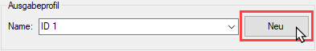 |
Der Assistent führt Sie Schritt für Schritt durch die verschiedenen Einstellungen und passt das Ausgabeprofil, abhängig von Ihren Antworten, an Ihre Bedürfnisse an. Wenn Sie in einem Dialogfenster alle erforderlichen Angaben gemacht haben, klicken Sie auf Weiter, um mit der Konfiguration fortzufahren. Möchten Sie einen Schritt zurückgehen, klicken Sie auf Zurück. Um die Konfiguration abzubrechen und den Assistenten zu schließen, klicken Sie auf Abbruch.
|
Hinweis: |
|
Wenn Sie ein Ausgabeprofil erstellt haben und den Dialog [Plotter-Konfiguration] schließen, speichern Sie die Änderungen. Bestätigen Sie die Meldung "Wollen Sie speichern?" mit "Ja". Ansonsten wird das neu erstellte Ausgabeprofil gelöscht. |

1.Wie sollen die Zeichnungen ausgegeben werden?
Wenn Sie Ihre Zeichnungen als Datei (z. B. als PDF) ausgeben möchten, können Sie im nächsten Schritt den Speicherort angeben. Bei der Option auf einen Drucker/Plotter wird die Angabe des Speicherorts übersprungen.
Die Option als PDF-Datei ist nur verfügbar, wenn der PDF-Drucker eDocPrinter PDF Pro auf Ihrem System installiert ist und der Gerätetreiber eDocPrinter PDF Pro GLASER eingerichtet ist.
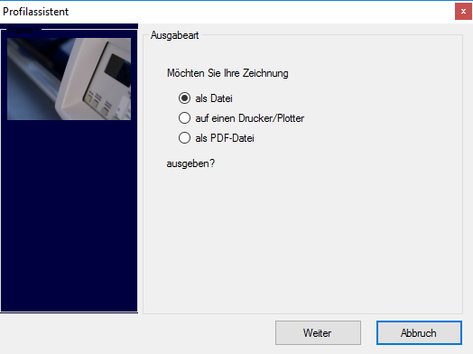 |
2.Sind in den Zeichnungen Grafiken und Windows-Schriftarten vorhanden?
Geben Sie als nächstes an, ob Grafiken in den Zeichnungen vorkommen und Windows-Schriftarten (True-Type-Fonts) verwendet werden. Wenn Sie eine der Fragen mit "Ja" beantworten, ist die Ausgabe im Windows GDI-Modus obligatorisch. Im anderen Fall können Sie im nächsten Dialogfenster zwischen GDI und ISBCAD Direktmodus wählen.
[Datei | Drucke/Plotte | Einst | Registerkarte Treiber | Steuerung → Windows GDI / ISBCAD Direktmodus].
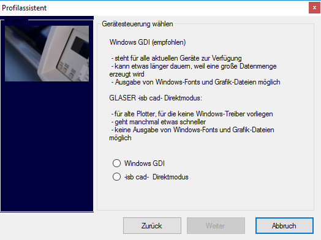 |
3.Welcher Gerätetreiber soll verwendet werden?
Wenn Sie den ISBCAD Direktmodus gewählt haben, können Sie in der Dropdown-Liste die Gerätesteuerung wählen. Ansonsten wählen Sie einen in den Windows-Druckeinstellungen konfigurierten Gerätetreiber.
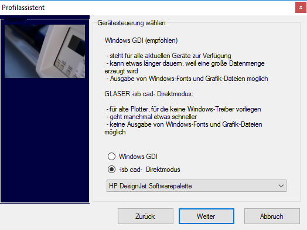 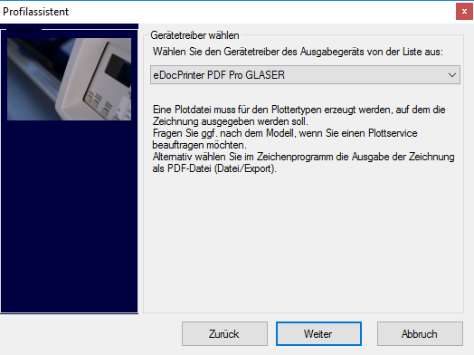 |
4.Wie sollen die Zeichnungen skaliert werden?
Wählen Sie, ob die Zeichnungen auf die Blattgröße skaliert oder maßstäblich (Faktor = 1) ausgegeben werden sollen. Wenn Sie die Option im Maßstab mit Faktor wählen, können Sie den entsprechenden Faktor eingeben.
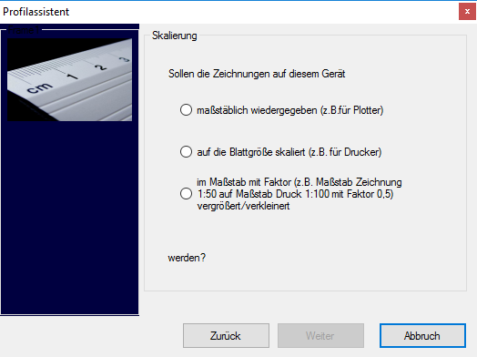 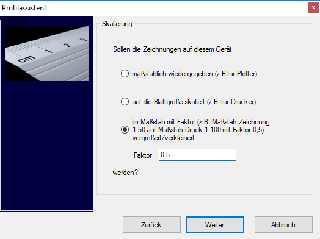 |
5.Welche Farbeinstellungen sollen gelten?
Sie können die Zeichnungen entweder in Schwarz, ohne Graustufen oder farbig ausgeben. Wenn Sie die Option farbig (inklusive Graustufen) wählen, können Sie in einem weiteren Dialogfenster (Farbzuweisung) angeben, ob die Farben aus der Bildschirmdarstellung übernommen werden sollen. Wenn Sie nein auswählen, werden alle Stifte auf Schwarz gesetzt.
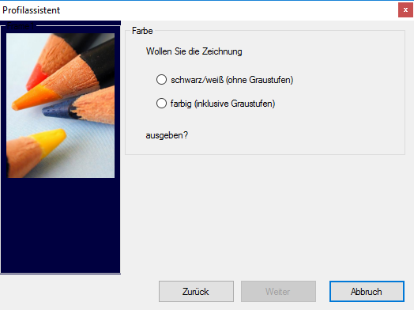 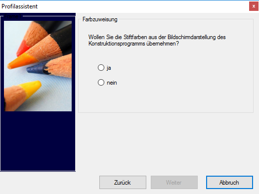 |
6.Welcher Blattrand soll verwendet werden?
Geben Sie die Form des Blattrandes an, mit dem die Zeichnungen ausgegeben werden sollen. Wenn Sie mit Weiter fortfahren, können Sie im letzten Dialogfenster (Ausgabeprofil) einen Namen für das Ausgabeprofil vergeben. Klicken Sie abschließend auf Fertig, um das Ausgabeprofil anzulegen. Wenn Sie auf Abbruch klicken, werden alle Angaben verworfen.
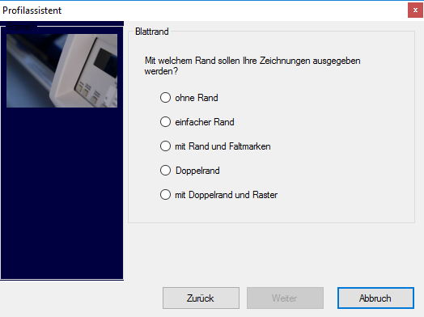 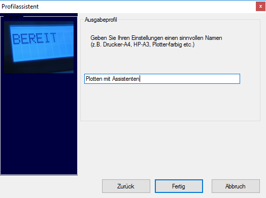 |
7.Ausgabeprofil auswählen
a) Nach Fertigstellung des Ausgabeprofils steht das neu erstellte Profil in der Ausgabeprofil-Liste zur Verfügung. Sie können jederzeit die durch den Assistenten erstellten Profile weiterbearbeiten, indem Sie z. B. die Farbzuweisung der Stifte ändern.
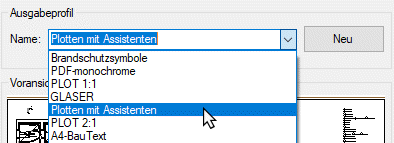 |
b) Im Funktionsbereich können Sie in der Ausklappliste das entsprechende Ausgabeprofil auswählen.
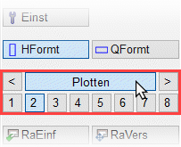 |
Siehe auch: